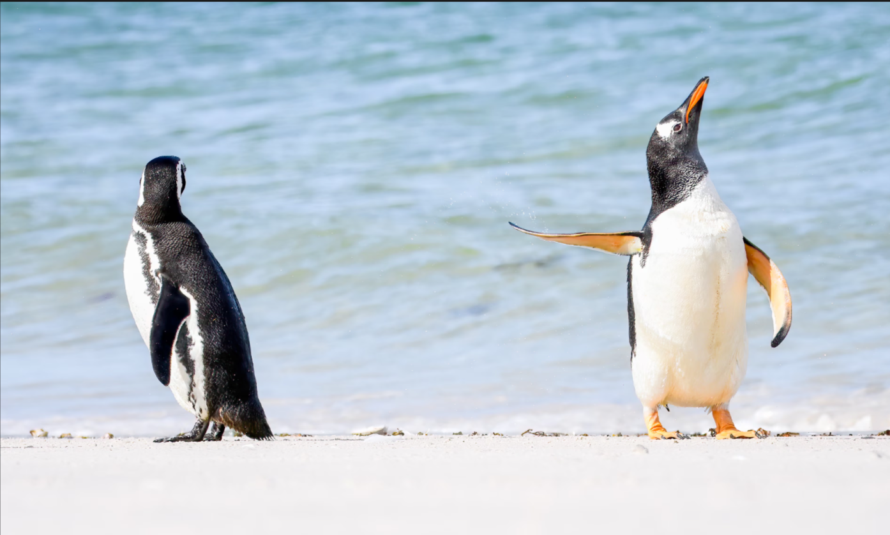
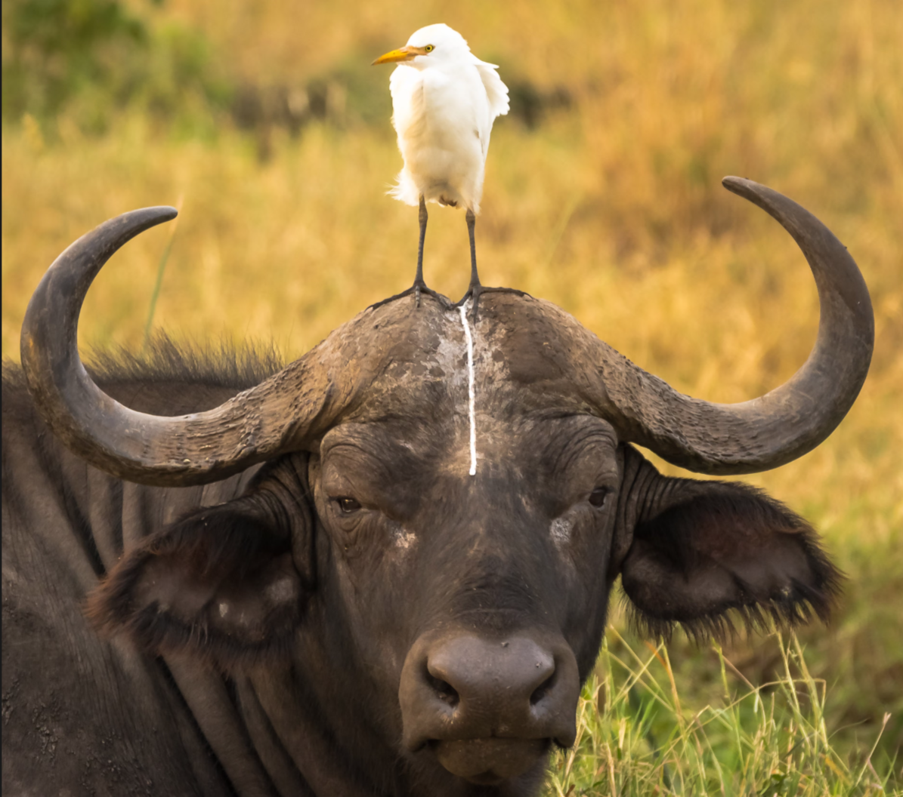

The Falkland Islands are one of the world’s penguin capitals; an estimated one million, from five different species, must share the beaches when they nest there each year. US wildlife photographer Jennifer Hadley captured this lively interaction between a gentoo penguin and its magellanic neighbour. “In this particular instance,” Hadley has said, “the penguins had been swimming, and as they stumbled on to land, the one on the right shook himself off and gave his mate ‘the fin’.”

Photograph: Jennifer Hadley
It looks like it’s been one of those days for this longsuffering buffalo, captured in Kenya’s Meru National Park by Tom Stables while documenting work by the Born Free Foundation. The region, says Stables, is “relatively barren and sparsely populated”, so coming across this disreputable pair, in this uncomfortable post-poo moment, brought Stables some levity after a long day bumping around on safari. “I’m always looking for humour,” he says. “It makes conservation a little more accessible, and lets us engage with a different audience.”

Photograph: Tom Stables
Want more animal drama? See what happens next!